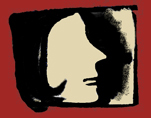
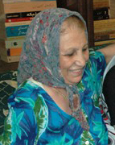
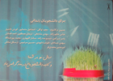
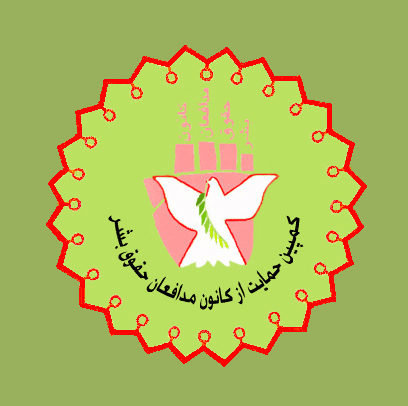

تغییر برای برابری
تغییر برای برابریدر گزارش ده روز گذشته، به طرح افزایش تعداد نمایندگان زن در مجلس،داستان ادامه دار و تلخ اسیدپاشی ها،ادامه ی فشارها بر دانشجویان دختر،ایجاد کمپین های یک میلیون امضایی و موازی کاری با فعالیت های زنان، و بازداشت روژین محمدی وبلاگ نویس از جمله خبرهایی است که بدان ها پرداخته شده است.
پذيرش > واژه كليدها > صفحه بندی > گزارش ویژه
گزارش ویژه
مقالهها
-

با زنان در خبر، از طرح افزایش نمایندگان زن در مجلس تا افزایش محدودیتها بر زنان
25 نوامبر 2011, بوسيلهى pari -
بیانیه حدود 900 نفر خطاب به مسئولان قضایی و امنیتی کشور: از دیدار نوروزی جرم نسازید، خدیجه مقدم و محبوبه کرمی را آزاد کنید
6 آوريل 2009, بوسيلهى pariششم فروردین 1388، 12 نفر از فعالان جنبش زنان متشکل از فعالان کمپین یک میلیون امضا و مادران صلح هنگامی که در ماشین های خود نشسته و منتظر دوستان شان بودند تا به دیدار نوروزی با خانواده شادروان زهرا بنی یعقوب بروند، توسط نیروهای امنیتی بازداشت شده و جهت بازجویی به پایگاه سوم پلیس امنیت نیلوفر منتقل شدند. در ادامه این بازداشت ضمن رفتار و برخوردهای تحقیر آمیز و خشونت بار با بازداشت شدگان، ابتدا همه آنها را به زندان اوین و روز بعد مردان را به زندان قزل حصار منتقل کردند.
طی این بازداشت، علاوه بر بی توجهی به اعتراض بازداشت شدگان، در پایگاه سوم پلیس امنیت نیلوفر (...) -

خبر کوتاه بود و دردناک : مادر محبوبه کرمی پس از آزادی وی درگذشت
8 آوريل 2009, بوسيلهى pariتغییر برای برابری - یک روز پس از آزادی محبوبه کرمی، 19 فروردین، صدیقه مصائبی مادر محبوبه در بیمارستان درگذشت. پس از تودیع کفالت 50 میلیون تومانی برای محبوبه کرمی، عصر روز گذشته وی آزاد شد و بلافاصله پس از آزادی برای دیدن مادرش مستقیم به بیمارستان ایران مهر رفت . مادر محبوبه که از بیماری سرطان در رنج بود ، پس از بازداشت محبوبه و 11 فعال جنبش زنان در بیمارستان بستری شد و با آن که برادر محبوبه از وخامت وضعیت مادرش به دادیار پرونده گفته بود و تقاضای آزادی او را کرده بود با قبول کفالت او مخالفت شد و محبوبه به همراه خدبجه مقدم در زندان ماند .
در این (...) -
نامه سرگشاده 123 نفر از موکلان شیرین عبادی و دیگر وكلای كانون مدافعان حقوق بشر به رئیس قوه قضائیه
29 ژانويه 2009, بوسيلهى pariما امضا کنندگان این نامه، از جنابعالی خواستار پی گیری موضوع وپیگرد قضایی افرادی هستیم که به طور غیر قانونی حریم خصوصی وکلای مدافع حقوق بشر و موکلان ایشان را، که عمدتاً از فعالان جامعه مدنی هستند، مورد تعدی قرار می دهند.
-
دیدار نوروزی هم ممنوع : بازداشت اعضای کمپین
26 مارس 2009تغییر برای برابری - ظهر امروز ششم فروردین، بیش از 10 نفر از اعضای کمپین یک میلیون امضا در خیابان سهروردی تهران بازداشت شدند.
امروز پنج شنبه، قرار بود جمعی از اعضای کمپین و چند نفر از مادران صلح برای عرض تبریک سال نو به دیدن خانواده برخی از زندانیان و همچنین خانواده دکتر زهرا بنی یعقوب به منزل آنان بروند. به این منظوردقایقی بعد از ساعت 2 و نیم بعد از ظهرهنگامی که همگی سر قرار، ابتدای خیابان سهرودی جنب پل سید خندان، حاضر شدند و قصد حرکت داشتند توسط ماموران نیروی انتظامی بازداشت و به کلانتری نیلوفر منتقل شدند.
هم اکنون خانواده های تعدادی از بازداشت شدگان (...) -

برای دانشجویان زندانی کارت تبریک عید بفرستید
19 مارس 2009, بوسيلهى pariتغییر برای برابری - دانشجویان و همراهان زندانیان دربند کارت تبریکی را تهیه و در میان مردم پخش کرده اند. آنها از همگان خواسته اند: «برای دانشجویان زندانی در اوین کارت تبریک عید بفرستید، عکس دانشجویان را در سفره 7 سین بگذارید.»
برروی این این کارت پستال ها اسامی دانشجویان دربند نوشته شده و پشت آنها نیز نشانی اوبن است و افراد می توانند با زدن تمبر و ارسال پستی آن برای دانشجویان دربند، همبستگی شان را با آنها نشان دهند.
اسامی ذکر شده درکارت پستال : حسین ترکاشوند، مجید توکلی، اسماعیل سلمانپور، کورش دانشیار، عباس حکیم زاده، مهدی مشایخی، نریمان مصطفوی، احمد قصابان، (...) -
شکایت نامه ای علیه پلیس امنیت
1 آوريل 2009, بوسيلهى pariتغییر برای برابری - 11 فروردین ماه، خدیجه مقدم در تماس با همسرش از حضور آقای دری نجف آبادی در زندان اوین خبرداد. وی گفت: طی نامه ای به آقای نجف آبادی شکایت نامه ای را علیه پلیس امنیت نوشتیم و در آن از رفتار غیر قانونی و غیر انسانی و غیر اسلامی پلیس امنیت شکایت کردیم. در این نامه متذکر شدیم که ماموران پلیس امنیت با دستگیر شدگان رفتار توهین آمیزی دارند. همچنین به ادامه بازداشت مان و برخورد سلیقه ای آقای حیدری فرد اعتراض کردیم. همزمان با ادامه بازداشت بدون موجه خدیجه مقدم ومحبوبه کرمی، 10 فروردین ماه، مادر محبوبه کرمی نیز به دلیل شدت گرفتن بیماری اش در (...)
-
تبدیل7 ماه محکومیت هانا عبدی به جریمه نقدی
30 آوريل 2009, بوسيلهى pariتغییر برای برابری - شعبه چهارم دادگاه تجدید نظر استان کردستان در خصوص محکومیت 7 ماهه هانا عبدی به اتهام تبلیغ علیه نظام ، مبادرت به صدور رای نمود.
دکتر محمد شریف وکیل دادگستری با اعلام این خبر به تغییر برای برابری گفت :« بر اساس رای صادره محکومیت ایشان به سه میلیون ریال جریمه نقدی تبدیل شده است. » وی درباره اتهام هانا گفت :«این پرونده در خصوص اعتصاب غذای ایشان و بیانیه ای که دراین خصوص صادر شده بود مفتوح گردید، و پاسخ دادگاه تجدید نظر نیز به اینجانب ابلاغ شد.»
حکم موکل وی روناک صفازاده که او نیز به همین اتهام محکوم شده بود هنوز به وی ابلاغ نشده (...) -

وب سایت کمپین حمایت از کانون مدافعان حقوق بشر راه اندازی شد
30 ژانويه 2009, بوسيلهى pariکمپین حمایت از کانون مدافعان حقوق بشر با راه اندازی وب سایتی برای انعکاس فعالیت های خود و همچنین معرفی هرچه بیشتر فعالیت های شیرین عبادی و دفتر کانون مدافعان حقوق بشر ، فعالیت خود را گسترش می دهد.
-
نفیسه آزاد به پرداخت جزای نقدی محکوم شد
7 مه 2009تغییر برای برابری: حکم نفیسه آزاد در خصوص پرونده بازداشت وی در روز 23 خرداد سال گذشته روز گذشته به وکیل وی ابلاغ شد. مینا جعفری وکیل نفیسه آزاد یکی از بازداشت شدگان 23 خردادماه سال گذشته با اعلام این خبر به تغییر برای برابری گفت روز گذشته دادگاه شعبه دادگاه شعبه 1054 مجمتع قضایی عدالت با ابلاغ رای صادر شده، موکلم را از اتهام اخلال در نظم عمومی تبرئه کرده و در رابطه با اتهام تمرد در مقابل پلیس وی را به پرداخت پنج میلیون ریال جزای نقدی محکوم کرده است.
بر اساس اظهارات مینا جعفری در متن حکم ابلاغ شده به وی امده است: "در خصوص اتهام نفیسه آزاد دایر بر اخلال در (...)